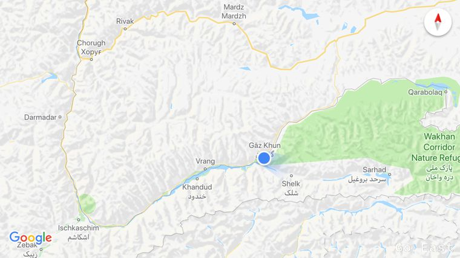
The Italian couple with the local guide set out to take the northern route as they still want to get to Murghab today. After breakfast we take the southern route to Langar through the Wakhan Corridor.
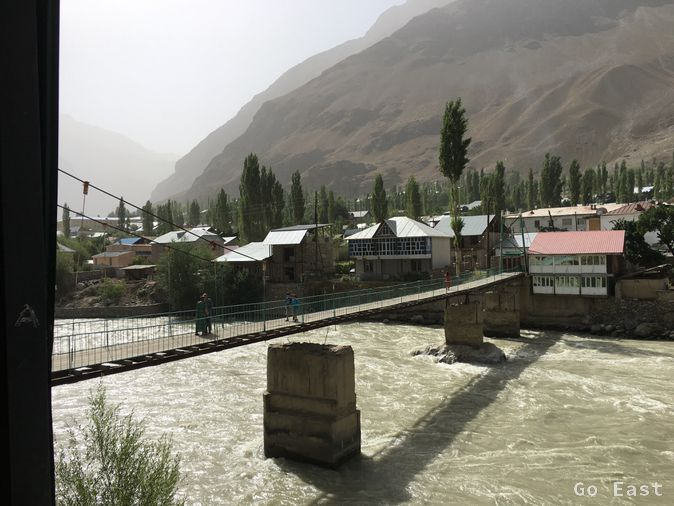
Suspension bridge in Chorugh
The condition of the road changes from great to pothole and then corrugated iron, which is not unpleasant. Unfortunately, it also adds dust. The temperature is around 28 degrees. We still drive up the Pandsch upstream 2,000m + corrugated iron, deep gravel, sand dune. Charlie gets stuck twice in the sand and tips over once.
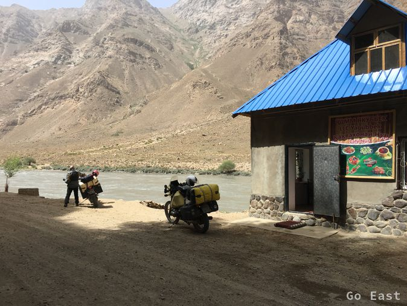
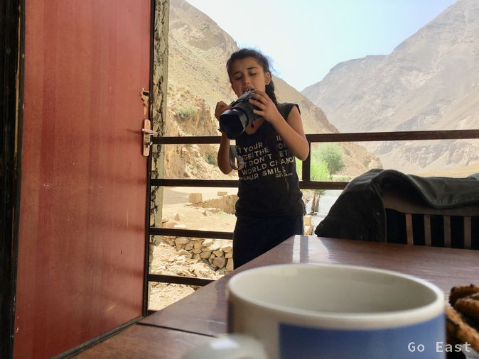
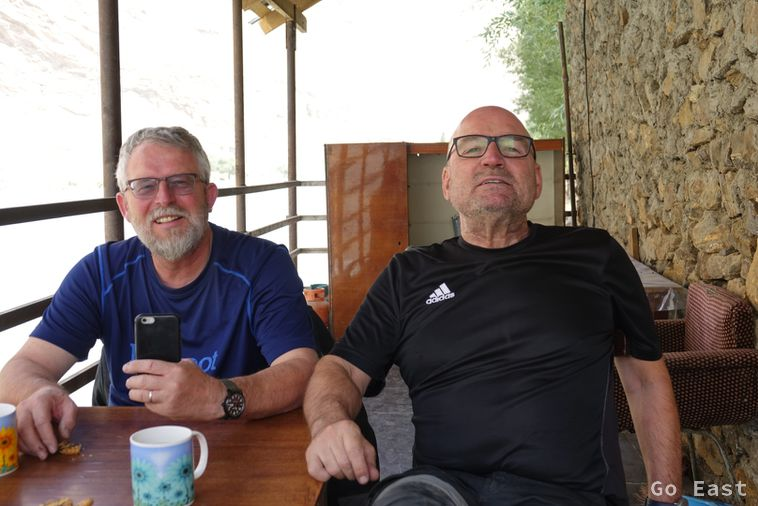
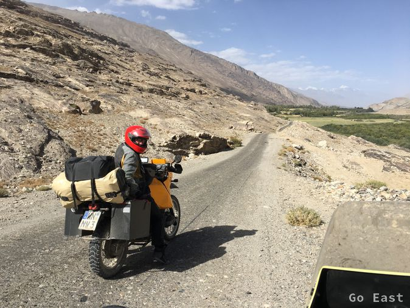

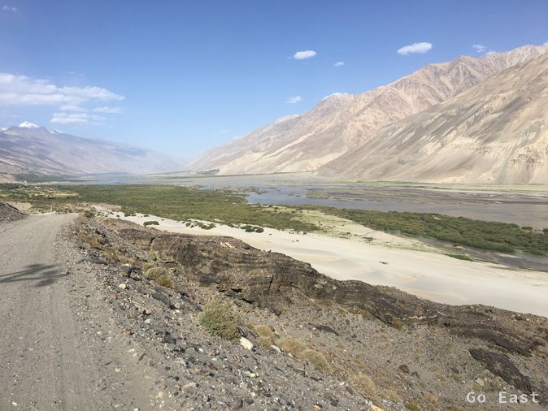

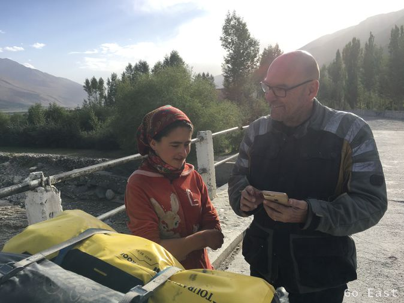
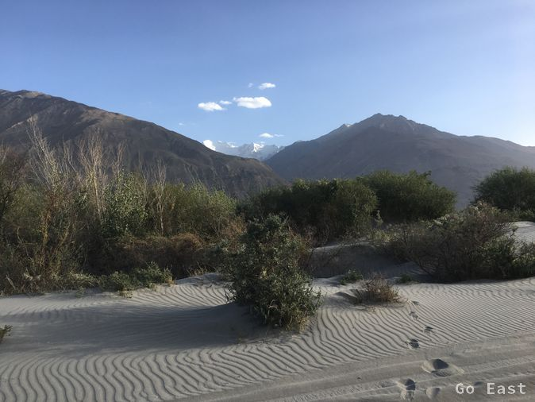
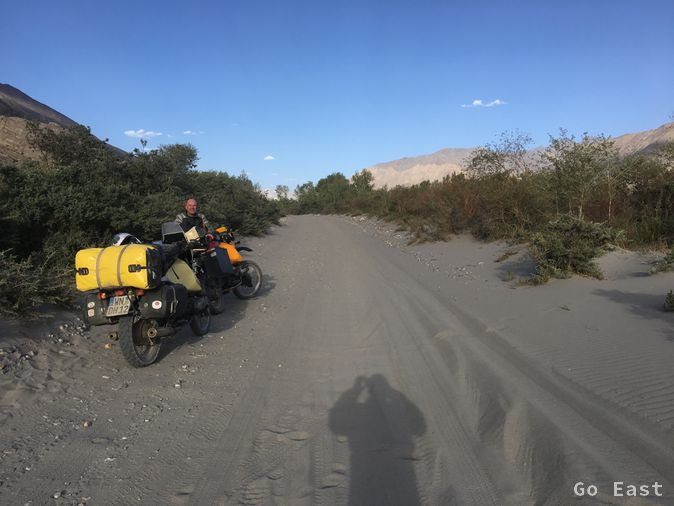
In Ischkoschim, the entrance to the Wakhan Corridor, we stop and stop at a restaurant in front of the bicycles. It's a spanish couple just leaving. We eat soup and chicken and two Dutchmen Martin and Andre with BMW 800 and Yamaha join us. Andre's rear shock is flat and makes driving difficult. We arrange that we meet for a beer in Langar in the hostel and leave. There are several cyclists traveling in both directions. The landscape is unique. We are constantly being waved at by old and young folks.
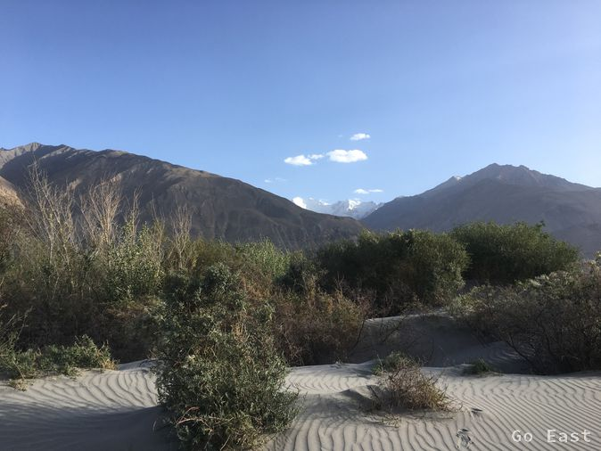
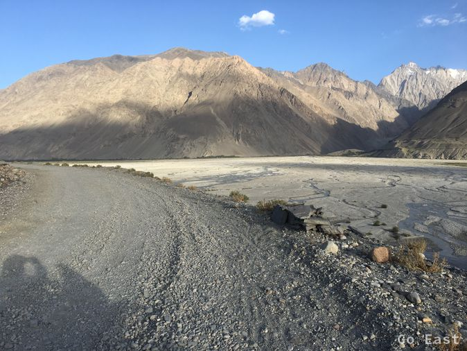
The road or better the runway is the challenge. Today it is less the potholes, but the soft and deep gravel and the sand fields that bother me. At a water hole, I narrowly escaped a fall, because I can not dodge it in time and it is deeper than I expected. My boots are running full and I continue driving until I have solid ground under my feet again. Driving is very strenuous, because you have to be very focused and standing up while driving for long distances in order to better balance the motorcycle. When a soft section of the road starts, it means getting up and accelerating, that the front wheel is relieved and the 350kg motorcycle is stabilized with Pilot. The back of the bike, then hops behind. Seated driving cannot be by such passage at all possible. In addition, we are now at an altitude of 2,800m and the breathing effort is considerably more complicated.

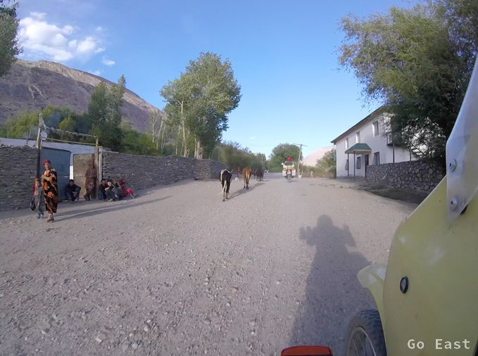
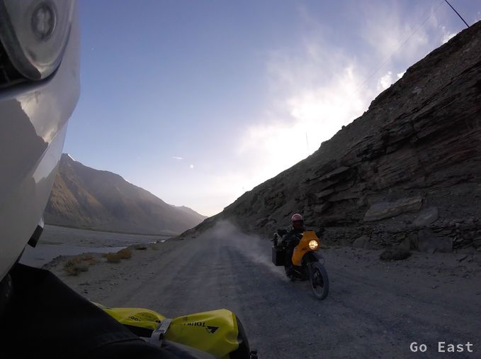
We reach Langar with the hostel and agree with the host. 20, - USD per bed with dinner and breakfast. There are hikers from Zillertal and Augsburg. The Dutch also arrive and we sit together, drink beer and eat rice with egg as a diner, entertain us excellently and determine the coolness that sets in now. Andre had a fall in the sand field and thereby bent the crash bar. Both are software engineers and work a lot abroad to put all sorts of machine controls into operation. Tonight you can get by without air conditioning. My SIM card megaphone does not work here, because roaming into a foreign network like Tcell is not supported. Nothing with post today.